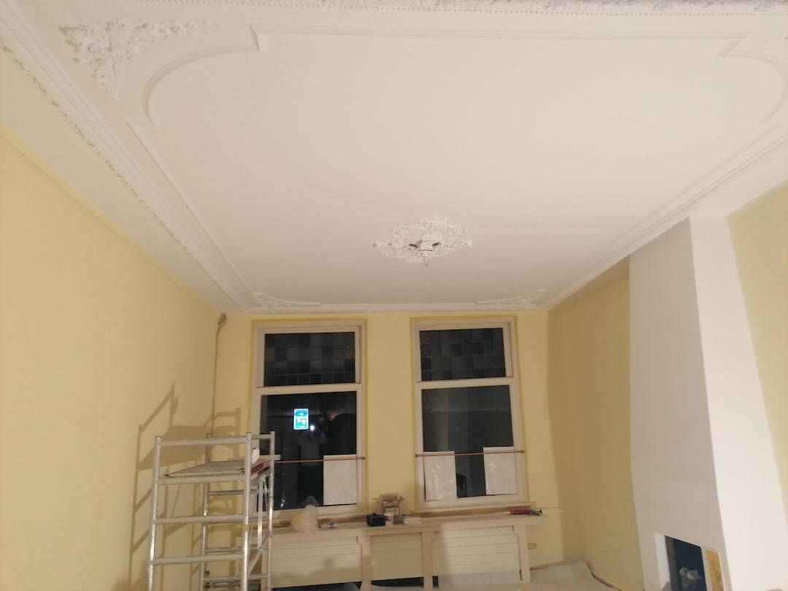
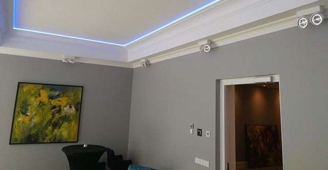
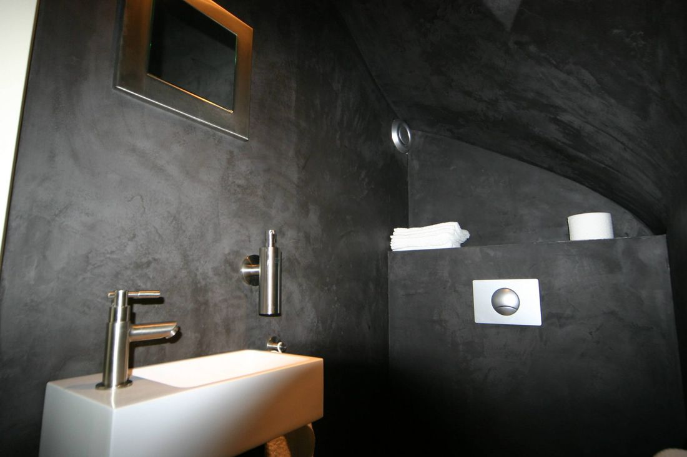
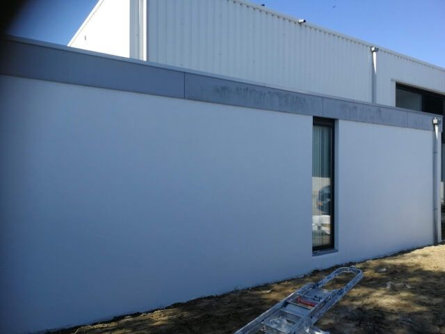

Het verschil zie je pas als de truweel weg is.








Stukadoorswerk is een wezenlijk onderdeel van een ruimte. Een goede afwerking gaat lang mee en kan zelfs waardeverhogend werken voor uw woning.

Het team heeft een gedegen opleiding genoten en volgt cursussen om op de hoogte te blijven van de nieuwste technieken en trends. Daarom mag het bedrijf zich officieel Erkend Leerbedrijf noemen. Persoonlijke benadering en veel flexibiliteit.